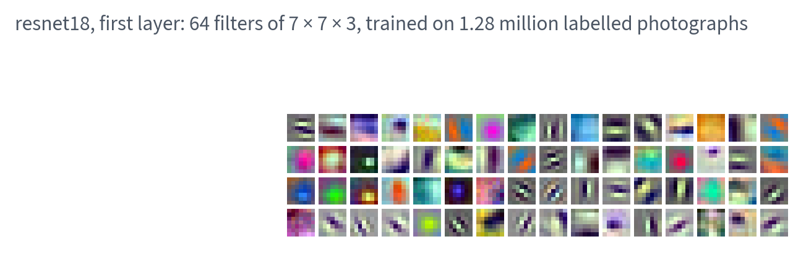
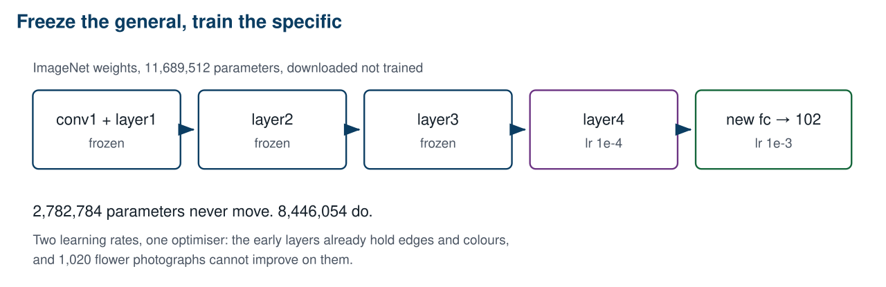
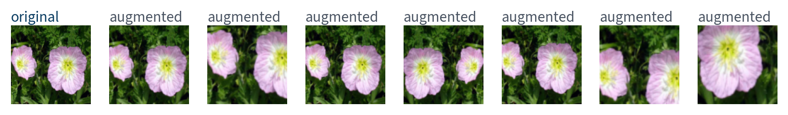
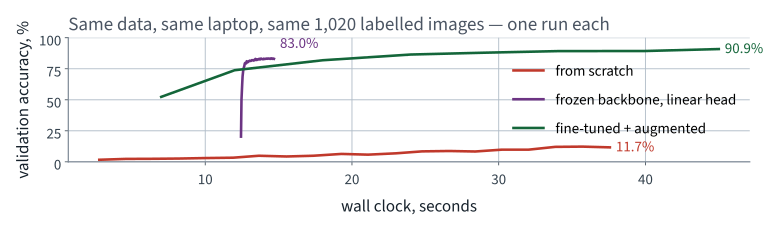
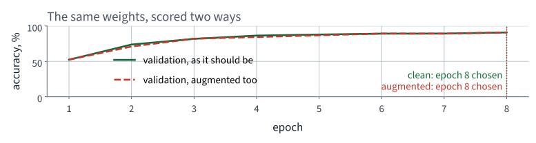

Flowers102
Lecture 13 Géron Ch. 12
Applications of Machine Learning
BSc Mathematics of Artificial Intelligence · Third year
Measured on one run of this lecture’s notebook; hardware, library versions and random seeds can make a re-run differ slightly.
Lecture 12 built a convolutional network for the flower brief: weight sharing, so one filter is reused at every position; equivariance, so the feature map follows a shift of the image; pooling, which turns that into invariance; then an architecture, trained from scratch and scored once on the test set. Rebuilt and retrained in this lecture’s notebook:
| Model | Test accuracy |
|---|---|
| Always the commonest species | 3.87% |
| Convolutional network from scratch, 4,807,494 parameters, 20 epochs | 9.82% |
| What the operator needs | 90% |
Which suggests the repair: do not learn them. Somebody already has.
Measured on one run of this lecture’s notebook; hardware, library versions and random seeds can make a re-run differ slightly.
No new derivation today — Lecture 12’s parameter count is the whole argument, and this lecture is what you do about it. examinable the method, and the conditions under which it fails.
Not “flowers”. A hierarchy, and only the bottom of it is general:
| Depth | What the filters respond to | Transfers? |
|---|---|---|
| first block | edges, colour opponency, simple gradients | to essentially anything |
| middle blocks | textures, repeated motifs, part-like shapes | to most natural images |
| last blocks | object-specific configurations | only to similar objects |
| the head | the 1,000 ImageNet classes | not at all — it is replaced |
Which is the whole recipe: keep the bottom, adapt the top, replace the head. Freezing is not a compromise forced by compute — it is a statement that those layers already encode what you would otherwise be trying to learn from 1,020 images.
| Accuracy | |
|---|---|
| Training set | 27.75% |
| Validation set | 11.67% |
| Gap | 16 points |
Lecture 5 gave this shape a name: a gap between the images the network has seen and the ones it has not is variance.
Not a capacity problem. Twenty epochs is a short run and the training accuracy is still climbing when it stops — but it is already 16 points ahead of validation, and fitting harder widens that gap rather than closing it.
Measured on one run of this lecture’s notebook; hardware, library versions and random seeds can make a re-run differ slightly.
| Cure | Can we? |
|---|---|
| More training data | no — labelling is the whole cost |
| More constraint on the hypothesis space | yes, and we have already done it once |
Weight sharing was a constraint, and it bought a factor of 5,478,275. The question is where the next constraint comes from.
Measured on one run of this lecture’s notebook; hardware, library versions and random seeds can make a re-run differ slightly.

The first layer of a ResNet-18 trained on ImageNet: oriented edges and opponent-colour blobs. 9,408 numbers, and every one of them is a fact about photographs rather than about the 1,000 classes they were fitted on.
Measured on one run of this lecture’s notebook; hardware, library versions and random seeds can make a re-run differ slightly.
The repair is therefore not a better architecture, a longer run or a cleverer schedule. It is starting from weights that already work.
Measured on one run of this lecture’s notebook; hardware, library versions and random seeds can make a re-run differ slightly.
| Family | Params | Use it when |
|---|---|---|
| MobileNet / EfficientNet-B0 | ~5 M | the budget is CPU, or inference has to be fast |
| ResNet-18 / ResNet-50 | 11 / 25 M | the default; well understood and widely reproduced |
| ConvNeXt, ViT-B | ~88 M | plenty of data and plenty of compute |
not examinable — engineering The names change every year. The trade-off does not.
requires_grad = False stops the gradients. It does
not stop batch normalisation updating its running mean and variance, which
happens in the forward pass and has nothing to do with autograd.
train() mode keeps rewriting
its normalisation statistics from your batches. The weights are fixed and
the network still drifts — and it drifts towards a corpus of 1,020
images, which is the opposite of what you froze it for.
The fix is model.eval() on the frozen part
— the same call that switches dropout off for evaluation, and for the
same underlying reason: some modules behave differently in the two modes, and
the mode is not implied by anything else you have set.
eval() mode, extract features onceSteps 3, 4 and 5 each end in measure. A recipe without them is a ritual.
from torchvision.models import resnet18, ResNet18_Weights
weights = ResNet18_Weights.DEFAULT
net = resnet18(weights=weights)
| Value | |
|---|---|
| Parameters | 11,689,512 |
| Trained on | ImageNet, 1,000 classes |
| Output before the classifier | 512 numbers |
Residual networks are Chapter 12's own example architecture. We use it; the residual connection itself is the book’s, not ours to re-derive.
Measured on one run of this lecture’s notebook; hardware, library versions and random seeds can make a re-run differ slightly.
>>> ResNet18_Weights.DEFAULT.transforms()
ImageClassification(
crop_size=[224]
resize_size=[256]
mean=[0.485, 0.456, 0.406]
std=[0.229, 0.224, 0.225]
interpolation=InterpolationMode.BILINEAR
)
Use these statistics, not ones computed from your own training images. The network’s first layer expects inputs on the scale it was trained with, and substituting your own is a silent, uncrashing degradation.

2,782,784 parameters never move. 8,446,054 do.
Measured on one run of this lecture’s notebook; hardware, library versions and random seeds can make a re-run differ slightly.
for p in net.parameters():
p.requires_grad = False
net.fc = nn.Linear(512, 102) # a fresh module: requires_grad is True
print(sum(p.numel() for p in net.parameters() if p.requires_grad))
# 52326
opt = torch.optim.Adam(net.fc.parameters(), lr=1e-3)
Replacing fc after the loop is not an accident
of ordering — a newly constructed module has
requires_grad=True, so the head is trainable and nothing else
is.
body = nn.Sequential(*list(net.children())[:-1]).eval()
with torch.no_grad():
F_train = torch.cat([body(xb).flatten(1) for xb, _ in train_loader])
# F_train is (1020, 512). Now train a linear model on a table.
The 1,020 images pass through the backbone once rather than once per epoch. 12 seconds for the features, about two seconds for 60 epochs of the head — 15 in total.
| Model | Test accuracy | Wall clock |
|---|---|---|
| From scratch, 20 epochs | 9.82% | 38 s |
| Frozen backbone, linear head | 81.09% | 15 s |
2.6× faster
and 71.3 points better.
AnimationMeasured on one run of this lecture’s notebook; hardware, library versions and random seeds can make a re-run differ slightly.
The variance problem was not solved. It was moved to a dataset large enough to absorb it.
Measured on one run of this lecture’s notebook; hardware, library versions and random seeds can make a re-run differ slightly.
The early layers hold edges and colours, which are not about flowers. The late layers hold parts and textures, which partly are.
for p in net.layer4.parameters():
p.requires_grad = True
opt = torch.optim.Adam([
{"params": net.layer4.parameters(), "lr": 1e-4},
{"params": net.fc.parameters(), "lr": 1e-3},
])
One optimiser, two parameter groups, two learning rates. That is all a “differential learning rate” is.
| Starting point | Rate | |
|---|---|---|
| new head | random | large — it has everything to learn |
| pretrained block | already good | small — it has something to lose |
Give the backbone the head’s learning rate and the first few batches — whose gradients come through a randomly initialised head — will damage the representation you downloaded. It does not crash; the accuracy simply comes out lower and you conclude that transfer learning does not work.
AnimationFine-tune the whole backbone at the rate you would use to train from scratch, and the first gradient step overwrites the features you came for. The network then relearns them from 1,020 images, badly.
This is why differential learning rates exist, and why the usual recipe warms up the new head first while everything else is frozen: the head starts random, and its early gradients are large enough to damage anything they reach.
net.train()
for xb, yb in train_loader:
opt.zero_grad()
lossf(net(xb), yb).backward()
opt.step()
Every parameter in layer1 is frozen. Something
in layer1 changes anyway.
Thirty seconds before the next slide.
requires_grad = False does nothing to them — no
gradient is involvedtrain() mode quietly replaces
ImageNet’s statistics with the statistics of 1,020 flower
photographs, in batches of 32
net.train()
for m in [net.bn1, net.layer1, net.layer2, net.layer3]:
m.eval() # freeze the buffers too
We cannot buy labels. We can show the network a different view of the same labelled image every epoch.
Each is a transformation the label is known to survive. That is the entire criterion, and it is a modelling decision, not a library call.

The label is the same in all eight. That is the only thing that makes this legitimate.
train_tf = transforms.Compose([
transforms.RandomResizedCrop(224, scale=(0.55, 1.0)),
transforms.RandomHorizontalFlip(),
transforms.ToTensor(),
transforms.Normalize(IMAGENET_MEAN, IMAGENET_STD),
])
eval_tf = transforms.Compose([ # val AND test
transforms.Resize(256),
transforms.CenterCrop(224),
transforms.ToTensor(),
transforms.Normalize(IMAGENET_MEAN, IMAGENET_STD),
])
Two pipelines, deliberately. The evaluation one has no randomness in it; later in the lecture we measure what it costs when it does.
| Model | Test accuracy | Wall clock |
|---|---|---|
| From scratch | 9.82% | 38 s |
| Frozen backbone, linear head | 81.09% | 15 s |
| layer4 unfrozen + augmentation | 87.82% | 45 s |
9.82% to 87.82%. It is not cheaper than training from scratch — 45 seconds against 38, two validation passes per epoch included — it is better.
Measured on one run of this lecture’s notebook; hardware, library versions and random seeds can make a re-run differ slightly.

Read both axes. The probe is finished in 15 seconds; within 45 the fine-tune passes it while the from-scratch run is still climbing near the floor.
| Change | Test accuracy | Gain |
|---|---|---|
| from scratch | 9.82% | — |
| + pretrained backbone, frozen | 81.09% | 71.3 pts |
| + layer4 unfrozen, and augmentation | 87.82% | 6.7 pts |
Report the ablation, not just the final number. Almost all of the gain is in one row, and saying which row is what makes the result useful to somebody else.
All three rows are single runs, and none is replicated. The notebook unfreezes layer4 and augments in the same run, so it cannot say how the 6.7 points divide between the two; that takes one more fine-tune, without augmentation.
Measured on one run of this lecture’s notebook; hardware, library versions and random seeds can make a re-run differ slightly.
It is easy to build one pipeline and hand it to both loaders. The training loader wants random crops and flips; the evaluation loader must not have them.
Nothing raises. The only symptom is that the number moves when nothing else did.
Measured on one run of this lecture’s notebook; hardware, library versions and random seeds can make a re-run differ slightly.
Score one fixed set of weights — the fine-tuned model above — on the augmented validation set, 10 times:
| Accuracy | |
|---|---|
| on the clean validation set | 90.88% |
| augmented, mean of 10 | 89.01% |
| augmented, spread | 2.16 points |
The same weights, the same set, 2.16 points apart.
A deterministic function of fixed weights and fixed data does not wobble. When the score moves, something in its path is random.
Measured on one run of this lecture’s notebook; hardware, library versions and random seeds can make a re-run differ slightly.

Not in this run: both curves are still rising and both peak at the last epoch. Where a curve flattens, 2.16 points of noise is enough to order two epochs by the evaluator’s seed, and early stopping then keeps the wrong checkpoint.
Measured on one run of this lecture’s notebook; hardware, library versions and random seeds can make a re-run differ slightly.
a = evaluate(model, val_loader)
b = evaluate(model, val_loader)
assert a == b, f"evaluation is not deterministic: {a} vs {b}"
Run every evaluation twice. If the two disagree, something in the evaluation path is random — augmentation, dropout still active, or a shuffled loader whose batches are averaged rather than pooled.
examinable Name three things that make an evaluation non-deterministic, and the check that catches all three.
| Model | Test accuracy | Wall clock |
|---|---|---|
| Uniform guess | 0.98% | — |
| Commonest species | 3.87% | — |
| Convolutional net, from scratch | 9.82% | 38 s |
| Frozen backbone, linear head | 81.09% | 15 s |
| Fine-tuned + augmented | 87.82% | 45 s |
| Operator’s requirement | 90% | — |
Measured on one run of this lecture’s notebook; hardware, library versions and random seeds can make a re-run differ slightly.
| Wall clock | Against from scratch | |
|---|---|---|
| From scratch, 20 epochs | 38 s | — |
| Frozen backbone | 15 s | 2.6× less |
| Fine-tuned at 224 × 224 | 45 s | 1.2× more |
The fine-tune is not faster at all: it runs a much larger network on much larger images, and scores the validation set twice an epoch while it does. The frozen probe is the one that is cheaper — and it is also the one you should run first, every time.
| Situation | Why |
|---|---|
| Your images are unlike the corpus — radar, spectrograms, microscopy | the learned features are about natural photographs |
| Your task is not classification | the backbone is trained to discard position |
| You have millions of labelled examples | then the constraint is costing you, not helping |
Test it the same way: freeze, probe, and compare with the from-scratch baseline. The frozen probe takes seconds, so there is never an excuse for not knowing.
eval(), because freezing weights does not freeze their
running statisticsNot presented — for afterwards
five, in the style of the written paper
Solutions on Lecture 14’s deck.
Solutions on Lecture 14’s deck.
The five set at the end of Lecture 12
not part of this lecture
1. A dense layer mapping a $3\times128\times128$ input to a $32\times128\times128$ output has…
$32\times3\times7\times7 = 4{,}704$. Neither $H$ nor $W$ appears.
2. State the difference between equivariance and invariance, say which of the two pooling builds, and why a…
Equivariance: $f(T x) = T f(x)$, the output moves with the input. Invariance: $f(T x) = f(x)$, the output does not move. Pooling builds invariance, and a classifier wants it because the species is the same wherever the flower is.
Measured on one run of this lecture’s notebook; hardware, library versions and random seeds can make a re-run differ slightly.
3. Convolution is equivariant to translation on the interior of an image but not at the border. Give the reason.
Zero padding invents input that was not there, so a shift moves real content into invented content.
4. Trained with Adam at its default learning rate of $10^{-3}$, the lecture’s network neither diverges nor…
It plateaus at or near chance, 0.98% on a split with ten images of every species. Two seeds at each rate, same schedule: 1.42% mean validation accuracy at $10^{-3}$ against 5.74% at $3\times10^{-4}$, 4.31 points.
Measured on one run of this lecture’s notebook; hardware, library versions and random seeds can make a re-run differ slightly.
5. Two runs of the same network, differing only in the seed, reach 6.86% and 4.61% validation accuracy. A change…
Nothing: 1.5 points is inside the 2.25-point spread between two seeds. Report the spread beside the number, from several seeds of each condition.
Measured on one run of this lecture’s notebook; hardware, library versions and random seeds can make a re-run differ slightly.
Lecture 14 · Géron Ch. 12
Where the object is, and how many: a detector returns a set of boxes
Intersection over union, why it stops giving a gradient, and average precision
Running a pretrained detector, choosing its threshold, non-maximum suppression
Tracking in brief, and segmentation: a label for every pixel
Run the Lecture 13 notebook first